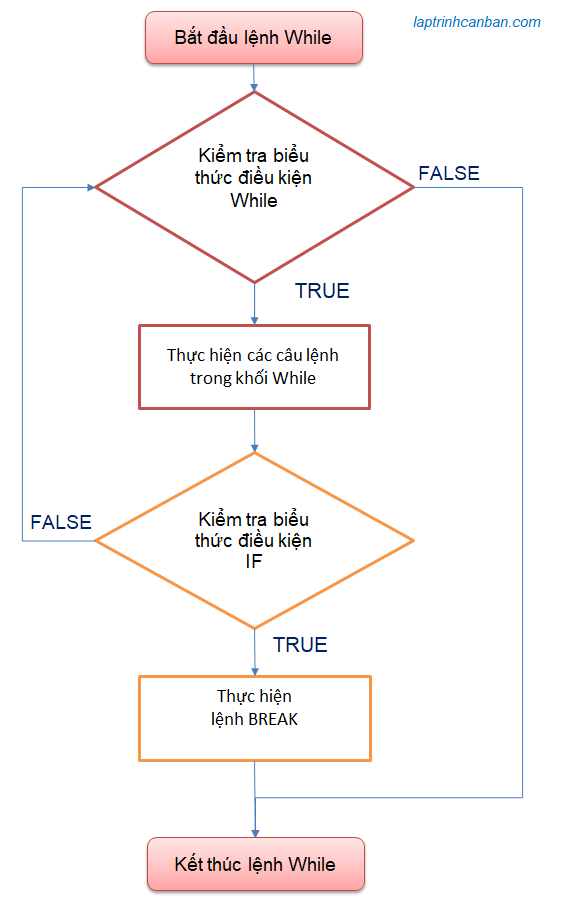
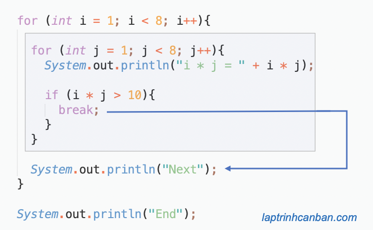
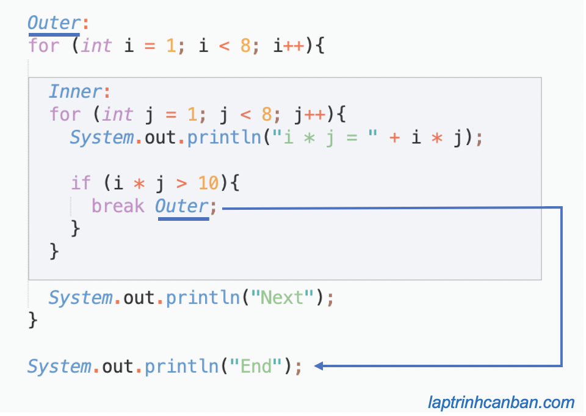

Hướng dẫn cách sử dụng lệnh break trong Java. Bạn sẽ học được cách dùng lệnh break để thoát khỏi vòng lặp trong Java, cũng như cách sử dụng lệnh break kèm label trong các vòng lặp lồng sau bài học này.
Lệnh break trong Java
Lệnh break trong Java được sử dụng để thoát khỏi vòng lặp trong Java khi điều kiện chỉ định được thỏa mãn. Các vòng lặp trong Java như vòng lặp while hoặc vòng lặp for sẽ buộc phải kết thúc khi câu lệnh break được thực thi.
Cú pháp của lệnh break trong Java như sau:
break;
Câu lệnh break trong Java được sử dụng kết hợp với câu lệnh if trong Java và được miêu tả trong khối lệnh while hoặc khối lệnh for giống như sau đây:
while (biểu thức điều kiện while) {
Câu lệnh 1 ;
Câu lệnh 2 ;
if (biểu thức điều kiện if){
break;
}
}
Để hiểu rõ hơn, chúng ta sẽ sử dụng lại ví dụ trong bài While trong Java và cách xử lý chi tiết. Chúng ta có một vòng lặp while để in ra màn hình 3 lần dòng hello như sau:
class Main{ |
Chúng ta sẽ dùng lệnh break để dừng vòng lặp while tại vòng lặp thứ 2 khi i=2 như sau:
class Main{ |
Khi đó vòng lặp while break trong Java sẽ chạy như sau:
Lượt lặp đầu tiên:
- Khai báo biến i và gán giá trị ban đầu
i = 1 - Biểu thức điều kiện
i < 4là TRUE nên thực thi vòng lặp - Biểu thức điều kiện IF
i == 2là là False nên khối lệnh if (chứa lệnh break) được bỏ qua - Chạy lệnh
System.out.println("hello " + i);trong khối lệnh - Biểu thức thay đổi tăng giá trị i lên 1 đơn vị thành
i=2
Lượt lặp thứ 2:
- Biểu thức điều kiện For (
i < 4) là TRUE nên thực thi vòng lặp - Biểu thức điều kiện IF
i == 2là True nên các lệnh trong khối if (bao gồm cả lệnh break) được thực thi. Do lệnh break được chạy nên vòng lặp bị dừng lại và chúng ta thoát khỏi vòng lặp.
Ngoài vòng lặp:
- Chạy lệnh tiếp theo
System.out.println("bye");sau khi thoát vòng lặp.
Kết quả, vòng lặp while ở trên sẽ in ra màn hình console như sau:
hello 1 |
Chúng ta có thể khái quát xử lý bằng sơ đồ khối của lệnh break trong Java khi sử dụng trong vòng lặp while như sau:

Sử dụng lệnh break để thoát khỏi vòng lặp while trong Java
Chúng ta sử dụng lệnh break để thoát khỏi vòng lặp while trong Java theo điều kiện mà bạn muốn. Lệnh while sẽ dừng lại khi lệnh break được thực hiện, tất cả các xử lý sau lệnh break cũng như các lượt lặp còn lại trong lệnh while đều bị dừng giữa chừng.
Hãy xem ví dụ về vòng lặp while để in ra các số từ 1 đến 10. Nếu không sử dụng lệnh break thì chương trình sẽ chạy như sau:
class Main{ |
Tuy nhiên khi chúng ta sử dụng thêm lệnh break và muốn dừng vòng lặp khi biến num đạt giá trị bằng 2, chương trình sẽ chạy như sau:
class Main{ |
Bạn có thể thấy chúng ta đã thoát khỏi vòng lặp trong Java bằng lệnh break tại vị trí num ==2 rồi phải không nào?
Về cách sử dụng vòng lặp while, hãy xem chi tiết tại bài viết Vòng lặp while trong Java
Lại nữa, câu lệnh break cũng thường được sử dụng kết hợp với vòng lặp while true để thoát khỏi một vòng lặp vô hạn trong Java. Ví dụ:
class Main{ |
Sử dụng lệnh break để thoát khỏi vòng lặp for trong Java
Tương tự như trong vòng lặp while, chúng ta cũng sử dụng lệnh break để thoát khỏi vòng lặp for trong Java theo điều kiện mà bạn muốn. Lệnh for sẽ dừng lại khi lệnh break được thực hiện, tất cả các xử lý sau lệnh break cũng như các lượt lặp còn lại trong lệnh for đều bị dừng giữa chừng.
Ví dụ, chúng ta dừng lệnh tính tổng một dãy số nguyên dương nhỏ hơn 100 khi tổng đó lớn hơn 10 như sau:
class Main{ |
Về cách sử dụng vòng lặp for, hãy xem chi tiết tại bài viết Vòng lặp for trong Java
Lệnh break trong vòng lặp lồng
Giống như Kiyoshi đã hướng dẫn ở trên, thì lệnh break trong các vòng lặp như for hay while sẽ kết thúc xử lý vòng lặp, và tiến hành chạy các xử lý tiếp theo trong chương trình. Tuy nhiên trong các vòng lặp lồng chứa các vòng lặp bên trong vòng lặp, chỉ có vòng lặp chứa trực tiếp lệnh break mới bị kết thúc mà thôi.
Chúng ta hãy cùng xem vòng lặp for 2 lần sau đây:
for (int i = 1; i < 8; i++){ |
Vòng lặp for 2 lần này chứa 2 vòng lặp là vòng lặp ngoài (biến i) và vòng lặp trong (biến j). Lệnh break được chứa trực tiếp ở vòng lặp trong, và sẽ được thực thi nếu tích của hai biến i và j vượt quá 10.
Khi lệnh break được thực thi, một vòng lặp sẽ được kết thúc, tuy nhiên chỉ có vòng lặp trực tiếp chứa lệnh break đó được kết thúc mà thôi.

Trong trường hợp muốn chỉ định vị trí kết thúc vòng lặp bằng lệnh break một cách tự do trong chương trình Java, hãy tham khảo cách dùng lệnh break có nhãn (label) như dưới đây.
Lệnh break kèm label trong Java
Lệnh break kèm label trong Java là câu lệnh được sử dụng kèm với các label(nhãn) có tác dụng xác định vị trí sẽ kết thúc vòng lặp khi break được thực thi.
Có hai loại label có thể sử dụng kèm break là Inner và Outer, có ý nghĩa là Vòng lặp bên trong và Vòng lặp bên ngoài. Chúng ta sử dụng lệnh break kèm label trong Java với cú pháp sau đây:
Outer:
Vòng lặp ngoài:
Inner:
Vòng lặp trong:
break label (Inner or Outer);
Trong đó, việc viết các label (nhãn) Inner và Outer trước khi viết vòng lặp có tác dụng đặt tên label cho vòng lặp đó. Và label viết sau lệnh break, có tác dụng chỉ định vòng lặp Inner hay vòng lặp Outer sẽ được kết thúc khi thực thi break.
Ví dụ cụ thể, chúng ta sẽ đặt tên nhãn cho các vòng lặp ở trên như sau:
Outer: |
Khác với vòng lặp lồng không chứa nhãn sẽ kết thúc vòng lặp trực tiếp chứa lệnh break, thì trong vòng lặp lồng này, do chúng ta chỉ định break Outer; nên sau khi thực thi break, thì vòng lặp ngoài (được gán nhãn Outer) sẽ được kết thúc.

Tổng kết
Trên đây Kiyoshi đã hướng dẫn bạn về cách sử dụng lệnh break trong Java rồi. Để nắm rõ nội dung bài học hơn, bạn hãy thực hành viết lại các ví dụ của ngày hôm nay nhé.
Và hãy cùng tìm hiểu những kiến thức sâu hơn về Java trong các bài học tiếp theo.
HOME>> java cơ bản cho người mới bắt đầu>>11. vòng lặp trong java